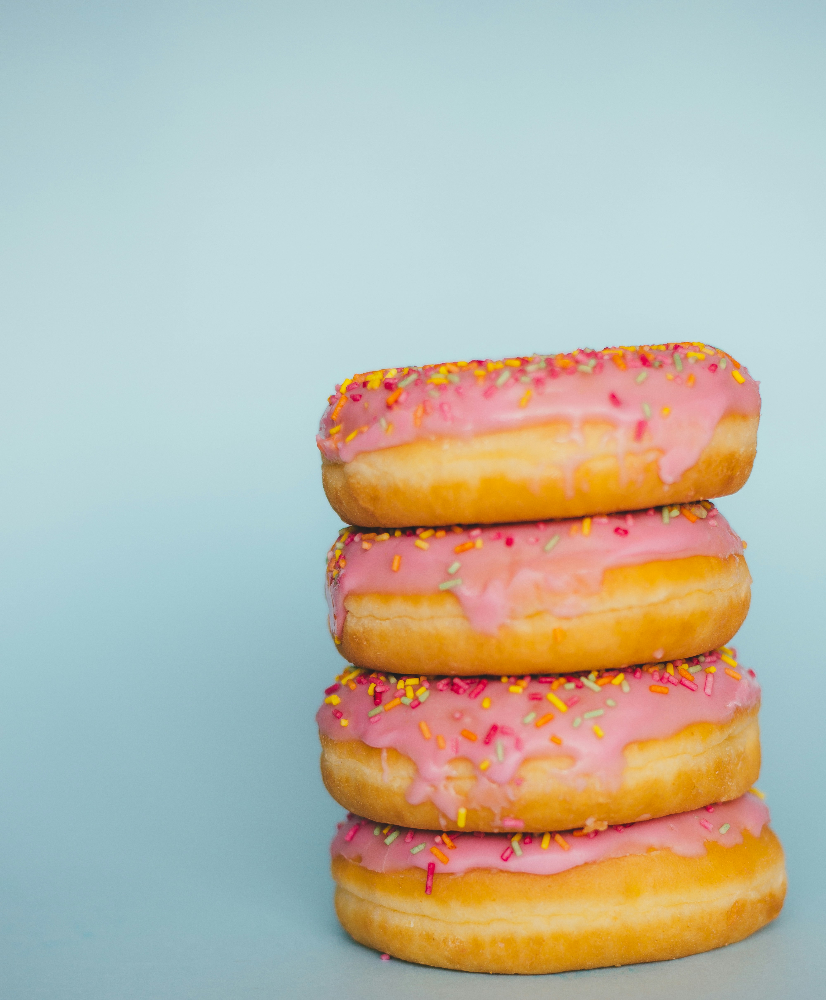

Doughnuts are a popular sweet treat enjoyed by people around the world. They are usually made from dough that is shaped into a ring or filled with delicious ingredients and then fried or baked. Doughnuts come in many flavors, including chocolate, glazed, powdered sugar, cinnamon, and jelly-filled. Their soft texture and sweet taste make them a favorite choice for breakfast, snacks, or desserts.Doughnuts are also a fun food because they can be decorated in many creative ways. Bakers often add colorful sprinkles, icing, nuts, or other toppings to make them look and taste special. They are commonly shared with family and friends at parties, celebrations, and gatherings. Whether you prefer a simple glazed doughnut or an exciting new flavor, doughnuts are a tasty treat that can brighten anyone’s day.
There are many different types of doughnuts, each offering something unique. Classic glazed doughnuts are coated in a thin layer of sugary icing, giving them a sweet and slightly sticky finish. Chocolate doughnuts are covered in rich chocolate frosting, while jelly-filled doughnuts contain a sweet fruit filling inside. Other popular varieties include powdered sugar, cinnamon sugar, Boston cream, and sprinkles. Some doughnuts are even decorated with creative toppings such as cookies, caramel, nuts, and colorful icing.
Doughnuts have an interesting history that dates back hundreds of years. Although their exact origins are debated, early versions of fried dough were enjoyed in different cultures around the world. Over time, doughnuts became especially popular in the United States, where doughnut shops and bakeries began offering a wide variety of flavors and styles. Today, they are enjoyed internationally and are often associated with coffee breaks, celebrations, and special occasions.
One of the reasons doughnuts remain so popular is their ability to bring people together. Whether shared with friends at breakfast, brought to the office, or enjoyed as a special weekend treat, doughnuts often create moments of happiness and comfort. With endless flavor combinations and new varieties being introduced all the time, doughnuts continue to be a delicious and timeless favorite.